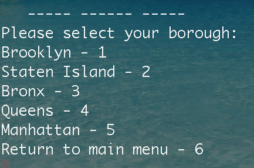

Ever wanted a convenient way to look up all of New York City’s hospitals from your command prompt? Sick and tired of going through many unorganized and unclear websites searching for simply information? Don’t have the patients to use google maps? The NYC Hospitals CLI Program is exactly what you need.
This program will list all of New York City’s hospitals in the CLI, and will allow you to narrow your search according to borough, hospital type, and name. The list will include the hospital’s name, type, phone number, and address.
When you start the program, you will be greeted with this menu:
From here you may choose whether to search for a hospital based on the borough, the name, or the type.
Enter 1, for borough, and you will receive this menu:

From here enter 1 for Brooklyn, 2 for Staten Island, 3 for the Bronx, 4 for Queens, and 5 for Manhattan. If you enter 2 for the Staten Island, you will see all the hospitals in the bronx listed like the following:
You can then choose another option for a different borough, or press 6 to return to the main menu. If you select 2 from the main menu to look up a hospital by name, you will be asked to enter the name:
If you enter a name of a closed hospital or a hospital that simply doesn’t exist, you will see this:
If you do enter a valid name for a hospital, you will see the details listed. Now from the main menu if you select 3, for type, you will see this menu:
Based on this menu you can choose what types of hospitals you would like to be listed for you. For example if you choose 4 for Child Health Care, you would see a list including this:
Afterwards, when returning to the main menu you can exit by selecting 4. The program will display a Good Bye message and will exit.